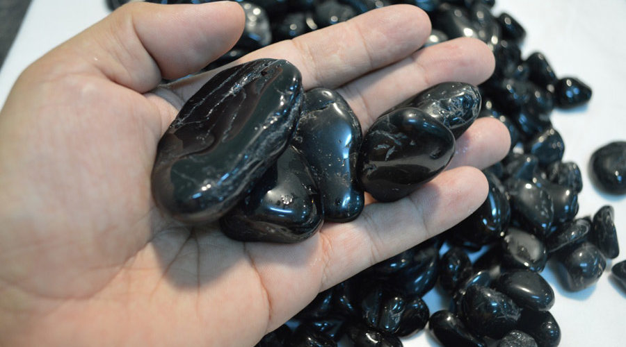
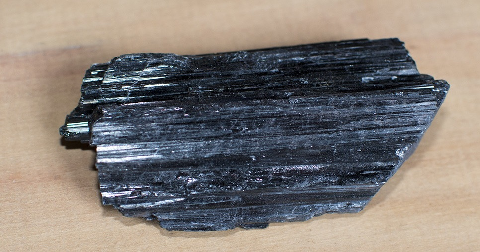

Turmalina
Significado
A Turmalina Negra é uma super pedra de proteção capaz de absorver e dissipar todas energia negativas.
Sua vibração neutraliza até os ataques mais fortes de magia negra, inveja e vampirismo energético.
Por ter capacidade de captar a energia da atmosfera e emitir partículas conhecidas como Íons, é uma poderosa pedra purificadora de ambientes.
Seu poder é tão grande, que a torna capaz inclusive de neutralizar os efeitos nocivos de radiações de celulares.
Efeitos Terapêuticos
A Turmalina Negra aumenta a vitalidade, fortalece o sistema imunológico, melhora os casos de artrite e favorece o realinhamento da coluna vertebral.
Por emitir radiação infravermelha na faixa de 9 mícrons, é muito recomendada para melhorar a circulação.
A turmalina Negra também dispersa o estresse e a tensão e estimula uma atitude positiva em relação a vida, sendo assim útil nos casos depressão, ansiedade e nervosismo.
← Voltar